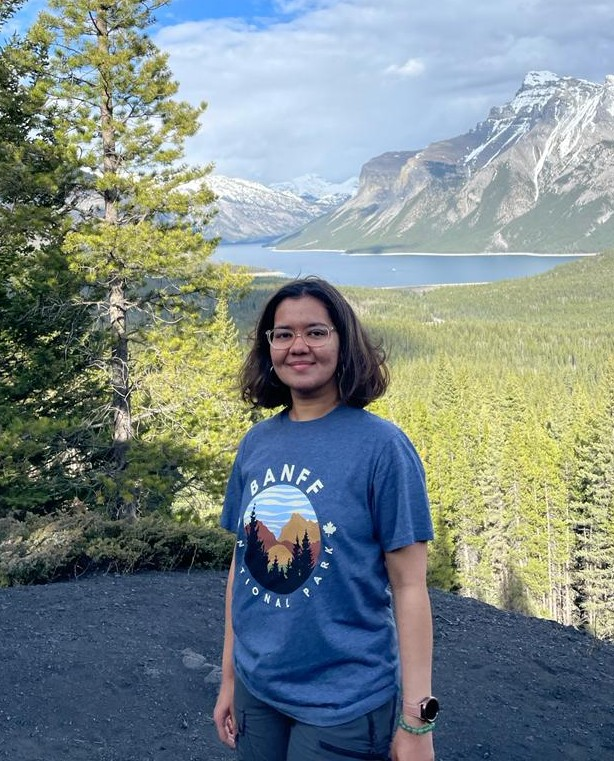

|
Shruti Joshi
I am a graduate student at Mila with Dhanya Sridhar and
Devon Hjelm.
The areas of my scientific research interests are causal representation learning and reinforcement learning. I work on making the
representations learnt by agents operating in an interaction-based setting identify latent variables which may be statically unobservable,
and on learning how to intervene towards learning such representations. I also work on standardized procedures and metrics for
evaluating representation and reinforcement learning methods, for example, a current direction I find particularly interesting is
evaluating mathematical reasoning abilities of these methods.
In addition to my research interests, I like to learn and incorporate better software design in my research towards
well-maintained (!) iterative codebases. I also like to spend my studying mathematics and some topics from physics such as thermodynamics
and statistical mechanics (for some interesting interpretations of causality!).
Email /
Github /
Google Scholar /
Twitter
|

|
|
Experience and new stuff
|
Publications
TriFinger: An Open-Source Robot for Learning Dexterity
Manuel Wüthrich,
Felix Widmaier,
Felix Grimminger,
Joel Akpo,
Shruti Joshi,
Vaibhav Agrawal,
Bilal Hammoud,
Majid Khadiv,
Miroslav Bogdanovic,
Vincent Berenz,
Julian Viereck,
Maximilien Naveau,
Ludovic Righetti,
Bernhard Schölkopf,
Stefan Bauer.
CoRL'20
Paper Twitter Project Page Real Robot Challenge
|
|
I love his website design.
|
|